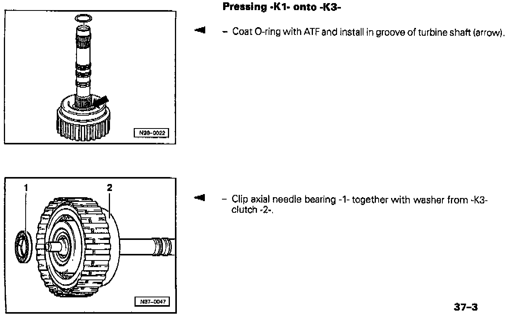
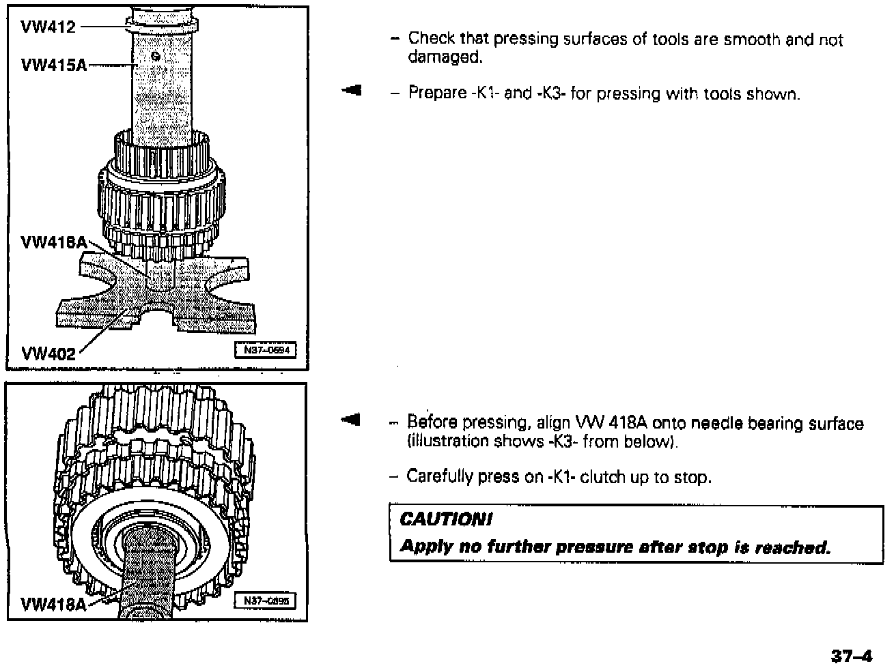

A/T - K1 and K3 Clutches, Pressing During Installation
Group: 37Number: 97-03
Date: Sept. 22, 1997
File this Technical Bulletin in Repair Manual No.: W42 011 294 120
Subject:
-K1- and -K3- Clutches, Pressing
Model(s):
Golf, GTI, Jetta, Cabrio
w/01M auto trans from 14047
Beginning with transmissions manufactured April 14 1997 (transmission build date 14047), the -K1- and -K3- clutches are pressed together.




If either the -K1 - clutch or the -K3- clutch has been disassembled or requires replacement, press the two clutches apart and back together according to the procedure.